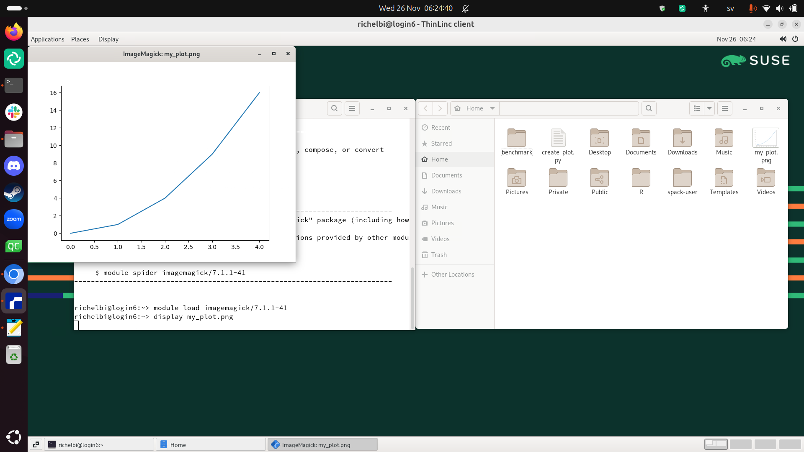

Working with graphics¶
Learning outcomes
- Practice using the documentation of your HPC cluster
- Create a minimal plot
- Load the Matplotlib module
- (optional) View the plot
For teachers
Teaching goals are:
- Learners hear about matplotlib
- Learners may find out again that X-forwarding is important
- Learners again have gotten 'stuff to work'
Lesson plan:
- 5 mins: prior knowledge
- 5 mins: presentation
- 15 mins: challenge
- 5 mins: feedback
Prior:
- What is meant with a plotting library?
- What is meant with a plotting package/module?
- Can you name a Python plotting package?
Why use graphics?¶
Graphics are useful to visualize your data, e.g. in the form of plots.
Instead of creating plots on your local computer, in this session, we will create plots on an HPC cluster.
Matplotlib is a popular Python package to make plots. Here we experience how easy/hard it is to use Matplotlib on your favorite HPC cluster. The hardest part will be to find out which software modules to load.
For this exercise, we will use this code:
This Python code will create a minimal plot and save it to file.
How does that plot look like?

This is the minimal plot as created by the code above.
Viewing graphics from a terminal may not always work. There are two solutions for this:
- Login to the remote desktop environment of your HPC cluster: a remote desktop environment has graphics enabled
- Login via SSH with X-forwarding enabled: this allows displaying simple graphics
In the worst case, downloading the image to your local computer is a clumsy option that works too.
Exercises¶
Enjoy a video?
You can find a video with solutions to these exercises:
| HPC Cluster | YouTube video |
|---|---|
| Alvis | YouTube video |
| Bianca | Not needed: no registrations |
| COSMOS | YouTube video |
| Dardel | YouTube video |
| Dardel | Failing using SSH: YouTube video |
| Kebnekaise | YouTube video |
| LUMI | Not needed: no registrations |
| Pelle | YouTube video |
| Tetralith | YouTube video |
How difficult will this exercise be?
The difficulty of these exercises depends on the documentation of your HPC cluster:
| HPC cluster name | Environment | Documentation | How to view images? | Difficulty |
|---|---|---|---|---|
| Alvis | Console | None | ImageMagick | Hard |
| Bianca | Console | Excellent | Copy to local computer | Medium |
| COSMOS | Console | None | Present | Medium |
| Dardel | Console | None | ImageMagick | Impossible? |
| Dardel | Remote desktop | None | ImageMagick | Medium |
| LUMI | Console | None | Unknown | Unknown |
| Kebnekaise | Console | Excellent | ImageMagick | Easy |
| Pelle | Console | Excellent | eog |
Easy |
| Tetralith | Console | None | eog |
Medium |
Exercise 1: Use Matplotlib to create a plot¶
- Create a Python script called
create_plot.pywith the content of the example code in it.
Answer
We did this in the previous session, 'Working with Python scripts'.
| HPC Cluster | How to run nano |
|---|---|
| Alvis | nano create_plot.py |
| Bianca | nano create_plot.py |
| COSMOS | nano create_plot.py |
| Dardel | module load nano ; nano create_plot.py |
| Kebnekaise | nano create_plot.py |
| LUMI | nano create_plot.py |
| Pelle | nano create_plot.py |
| Tetralith | nano create_plot.py |
- Run the Python script (i.e. without loading the Matplotlib module) and observe the error. The error should be mentioning Matplotlib (if not: the answer shows how to fix this)
Answer
These are the errors that may occur:
| Error | Solution |
|---|---|
| No module named 'matplotlib' | Load the Matplotlib module, which is the next step |
| Cannot find Python | Load a Python module, as done in previous session |
| Core dumped | Login to Dardel using ThinLinc |
The complete error message to get is similar to:
- For your favorite HPC center, find the documentation on how to use Matplotlib. Search for a maximum of 5 minutes! If you cannot find it, (try to) apply the steps in the UPPMAX documentation about Matplotlib for a maximum of 5 minutes! After that, simply copy-paste the answer of the next question.
Answer
From the documentation of your center, searching for, for example, 'Matplotlib'.
| HPC Cluster | Documentation |
|---|---|
| Alvis |  Closest documentation Closest documentation |
| Bianca | Not needed: no registrations |
| COSMOS | Closest documentation |
| Dardel | None |
| Kebnekaise | Documentation |
| LUMI | Not needed: no registrations |
| Pelle | Documentation |
| Tetralith | Closest |
- means that the documentation does not clearly answer
this question.
You may find that you can piece it together easily enough or
you may find that you cannot.
You are encouraged
to contact your HPC center to help them help you better
- If there is good documentation: load the software module needed. Else, copy-paste the answer.
Answer
| HPC Cluster | Documentation |
|---|---|
| Alvis | module load matplotlib |
| Bianca | Not needed: no registrations |
| COSMOS | module load GCC/13.3.0 matplotlib/3.9.2 |
| Dardel | module load PDCOLD/23.12 matplotlib/3.8.2-cpeGNU-23.12 |
| Kebnekaise | module load GCC/13.2.0 matplotlib/3.8.2 |
| LUMI | Not needed: no registrations |
| Pelle | module load matplotlib |
| Tetralith | module load buildtool-easybuild/4.9.4-hpc71cbb0050 GCC/13.2.0 matplotlib/3.8.2 |
Exercise 2: (optional) View the plot¶
This exercise is optional, as it has nothing to do with Python. However, it is quite practical to be able to see your plot directly.
-
Login to your HPC cluster in a way that allows for graphics (if you have not done so already). There are two ways:
- Login to the remote desktop environment of your HPC cluster: a remote desktop environment has graphics enabled. You can find an overview at this course's FAQ 'How can I login to an HPC cluster'.
- Login via SSH with X-forwarding enabled:
this allows displaying simple graphics.
In short: use
ssh -X [username]@[hpc_cluster](instead of omitting the-X). This may already work or this may never work.
-
View the plot:
- In a remote desktop environment, this is straightforward: click on the image from a file explorer
- When using SSH with X-forwarding enabled: use the way as shown below in the table.
How display an image in SSH with X-forwarding enabled
| HPC Cluster | How to display an image |
|---|---|
| Alvis | module load ImageMagick/7.1.1-15-GCCcore-12.3.0 ; display my_plot.png |
| Bianca | Impossible: X-forwarding is disabled. Use a remote desktop. |
| COSMOS | eog my_plot.png |
| Dardel | module load imagemagick/7.1.1-41 ; display my_plot.png |
| Kebnekaise | module load GCCcore/13.2.0 ImageMagick/7.1.1-34 ; display my_plot.png |
| LUMI | Not needed: no registrations |
| Pelle | eog my_plot.png |
| Tetralith | eog my_plot.png |
What is the error when I do not have X-forwarding enabled?
Here is one possible error message:
How does eog display a plot?
Here is how eog displays the plot:

How does display display a plot?
In a remote desktop environment, this looks like:
